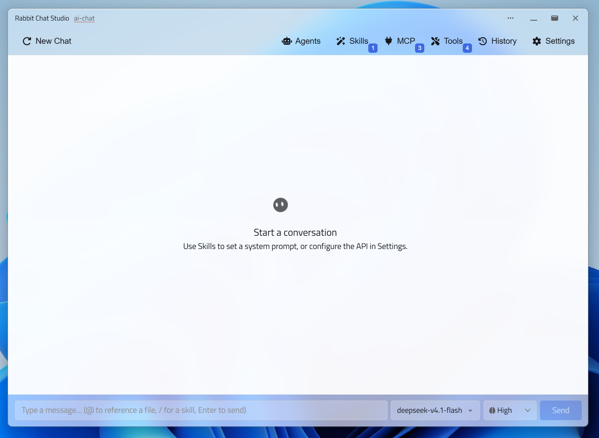

Skills 沙箱
每个工作区只有一个技能根目录 .data/skills，每个技能锁定在自己的 SKILL.md 里；启用状态同样按工作区保存。
Tauri 2 · MIT · 本地优先
Skills 沙箱、自我进化记忆、Sub-Agent 编排与 MCP 开箱即用。配置、历史与每一次请求都留在这台机器上——不用注册，也没有隐藏改写。
Windows 安装包或 Microsoft Store · macOS（Apple Silicon / Intel）· Linux AppImage。填一个 API Key，或者接本地模型就能用。
deepseek-v4 · 12 个工具 · evolution 记忆已载入
先读工作区的 AGENTS.md，再跑测试。
聊天只是起点
给 Agent 一个工作区、一套真正可用的工具，以及一份能查的执行记录。
每个工作区只有一个技能根目录 .data/skills，每个技能锁定在自己的 SKILL.md 里；启用状态同样按工作区保存。
助手可以给自己安装、修改、删除技能，并把验证过的事实写进 evolution 记忆；每次改动都留下 .bak.n 备份。
llm / cli / cloud 三种运行时，定义是文件化的 agents/<分类>/<slug>.md；每个子代理单独配模型、工具白名单与 MCP。
四级记忆、待办、延时定时器、文件操作与补丁。run_cmd 只运行 PATH 上的程序，run_shell 每个脚本都要过风险引擎。
stdio / SSE / HTTP / Streamable HTTP 四种传输，可做连通性测试；子代理任务各自持有独立的 server 进程，结束即退出。
请求体、token、耗时、状态与错误写进本地 SQLite；慢工具、MCP 调用和子代理可以后台跑，模型继续往下走。
为桌面而生
干净的聊天工作区，Agents、Skills、MCP、Tools、History 与 Settings 一触即达——但不会把你锁进某个内置模型。

不只是聊天框
同样是聊天界面，区别在于 Agent 有没有工作区、权限边界和可回放的记录。
| 能力 | Rabbit Chat Studio | DeepSeek Harness | Cherry Studio | Chatbox | LM Studio |
|---|---|---|---|---|---|
| Skills 沙箱 · 唯一技能根目录 | ✓ | ◐ | ◐ | — | — |
| 自我进化 · 自装技能 + 专属记忆 | ✓ | ◐ | — | — | — |
| 内置 Agent 工具 · 记忆 / 定时器 / 待办 | ✓ | ◐ | ◐ | — | — |
| 无需账户登录 | ✓ | ◐ | ✓ | ✓ | ✓ |
| 提示词自主 · 无默认人设 | ✓ | ◐ | ◐ | ◐ | ◐ |
| 本地请求审计 | ✓ | ✓ | ◐ | ◐ | ◐ |
| 后台执行 · 慢工具不堵回合 | ✓ | ✓ | — | — | — |
✓ 原生 · ◐ 部分或相近 · — 未提供。基于 2026 年 11 月的公开文档整理。
能力与边界
三个执行工具的作用域刻意不同，越权的一条路径被单独挡在外面。
| 工具 | 能触达的范围 | 约束方式 |
|---|---|---|
| file_actions | 工作区根目录之内，含隐藏的 .data（工作区数据库除外） | 路径沙箱：工作区外路径、../ 逃逸与符号链接逃逸一律拒绝 |
| run_cmd | 一个由系统通过 PATH 解析的程序 | 名称校验，风险评估 L0–L6，L0–L3 需确认 |
| run_shell | 任意位置，包括工作区之外 | 每个脚本先过风险引擎与语法门禁，L0–L3 需确认 |
自我进化模式允许助手改写自己的指令：请限定在受控工作区、短时使用，事后检查 .bak 备份。MCP 工具参数会原样转发，接入外部服务前先做最小权限验证。
三步开始
Rabbit Chat Studio 提供客户端，模型连接由你决定。
下载对应平台的安装包，双击安装。Windows 使用 NSIS 安装器，macOS 提供 Apple Silicon 与 Intel 两个 dmg。
Windows · macOS · LinuxOpenAI 兼容的 base URL + API Key，或者本地网关；不用注册账号，也没有强制登录。
Base URL · API Key · Model工作区就是 Agent 的活动范围：技能、记忆、待办和数据库都放在它的 .data 目录里。
Workspace /.data下载
Windows 安装包或 Microsoft Store、macOS（Apple Silicon / Intel）、Linux AppImage。发布页始终是最新版本。
最新版本：GitHub Releases ↗
ms-windows-store://pdp/?productid=9MV82J9G95GS
需要 Node.js 20.19+（或 22.12+）与 Rust stable；Windows 建议使用 MSVC 工具链。
npm install
cargo install tauri-cli --version "^2"
npm run tauri dev文档
Wiki 里有完整的中英对照教程；架构图、README 与更新记录都在仓库里。
大模型负责认知与规划，
本地工具负责执行与验证，
应用框架负责边界与记录。
没有默认人设，没有隐藏改写：你的 system message 是基底，只追加工具与技能说明。
常见问题
不。Rabbit Chat Studio 是桌面客户端，不是模型。你用自己的 API 端点和 API Key 把它接到模型服务上。
不需要 Rabbit Chat Studio 账号。你只需要所选服务商提供的 API 信息。
任何兼容 OpenAI 风格 Chat Completions 的服务，或者本地网关。兼容程度取决于服务商与它支持的 API 特性，接之前请确认端点与模型要求。
配置、历史、审计记录和 Agent 状态都在本机的应用目录与工作区 .data 里。为了获得回复，提示词与附件会被发送到你配置的 API 端点；敏感内容请先查看该服务商的隐私与留存政策。
客户端以 MIT 许可证开源，可以自由使用、修改与分发。模型调用费用由你选择的服务商按其价格单独计费。
Windows 10 2004+（NSIS 安装包或 Microsoft Store）、macOS（Apple Silicon 与 Intel）、Linux（x86_64 AppImage）。winget、Homebrew 与 Scoop 清单暂未提供。
每个工作区只有一个技能根目录，文件操作被限制在工作区内，技能改动会留下 .bak 备份。自我进化模式允许助手改写自己的指令，请只在受控工作区、短时使用，事后检查备份；MCP 参数会原样转发，接入外部服务前先做最小权限验证。
Rabbit Chat Studio —— 你的桌面、你的 API、你的工作流。